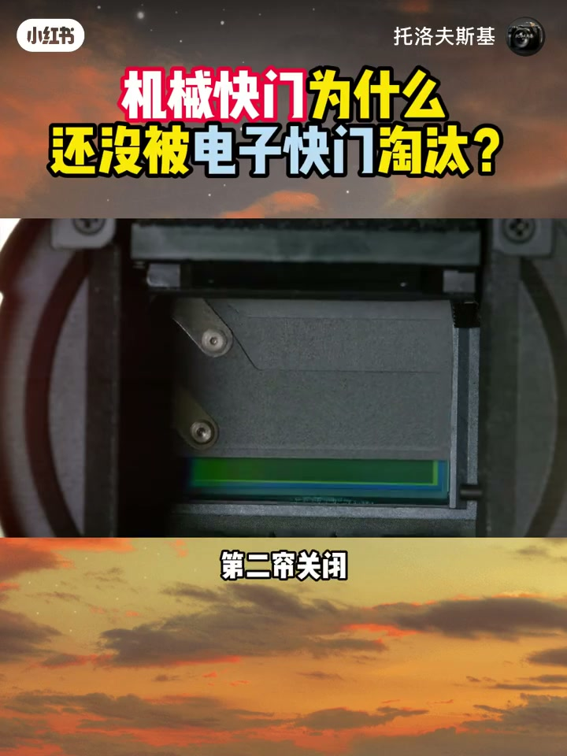
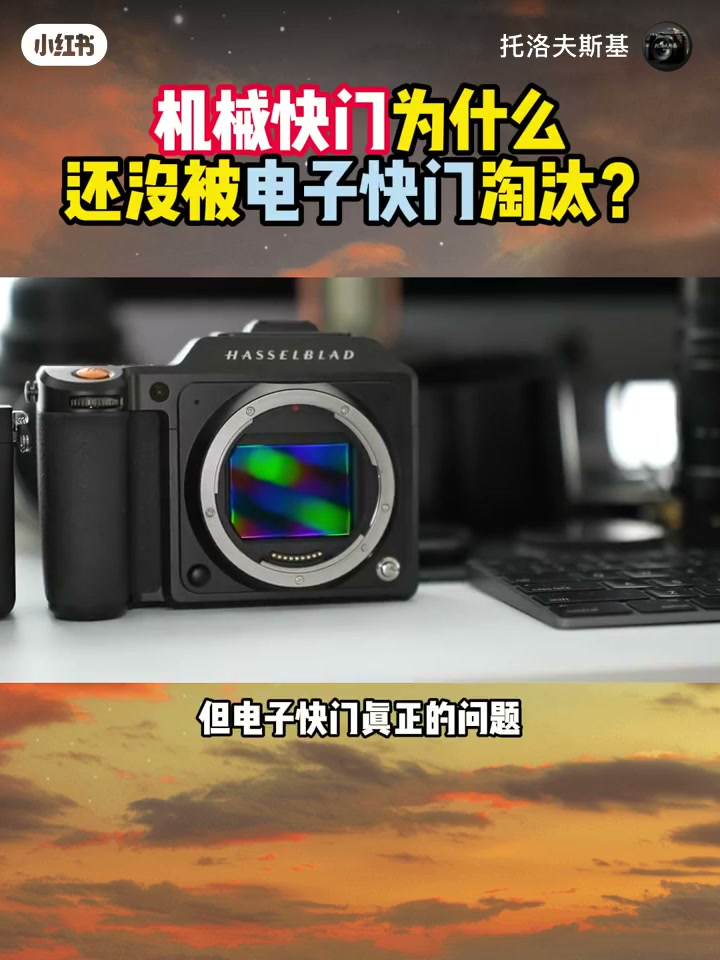
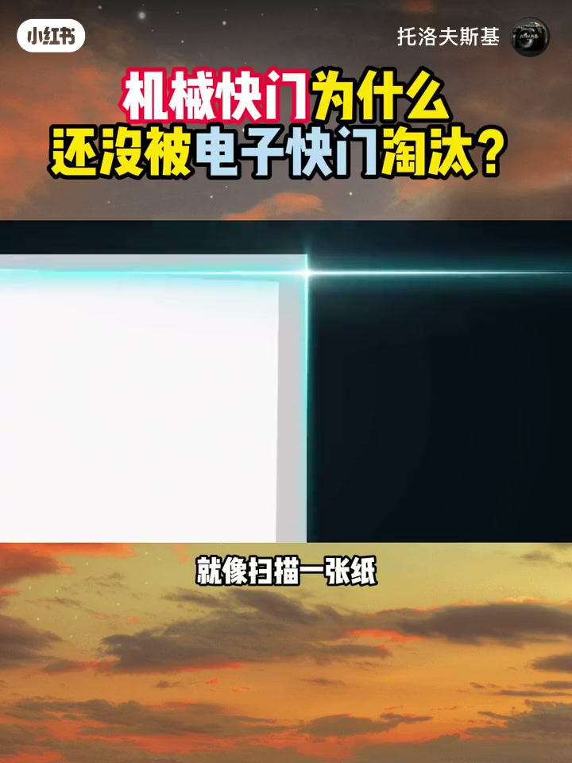
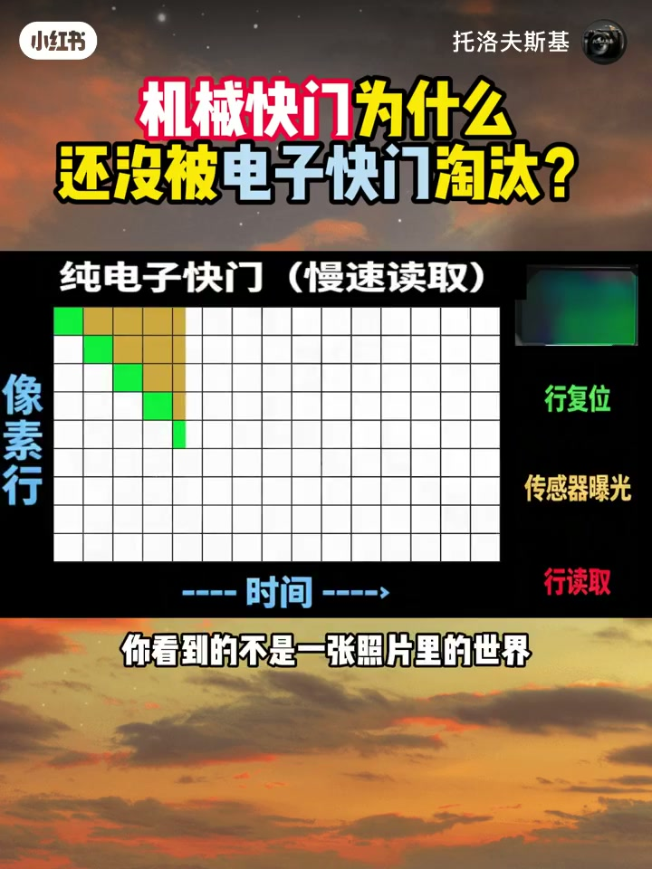
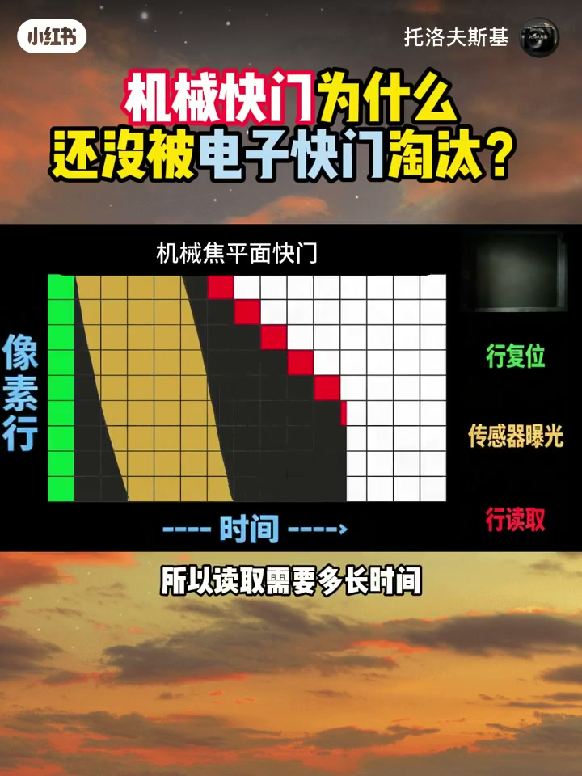
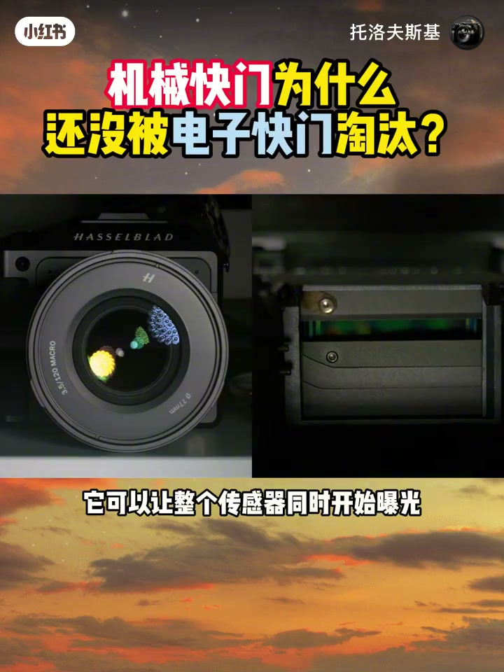
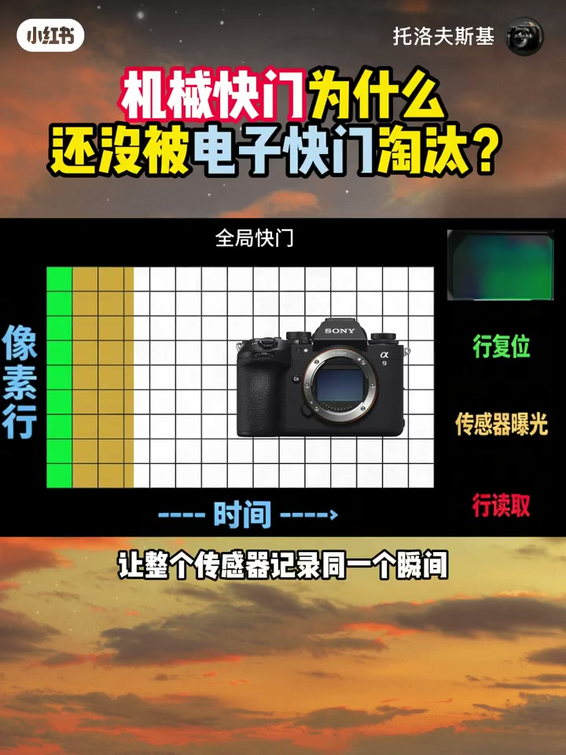
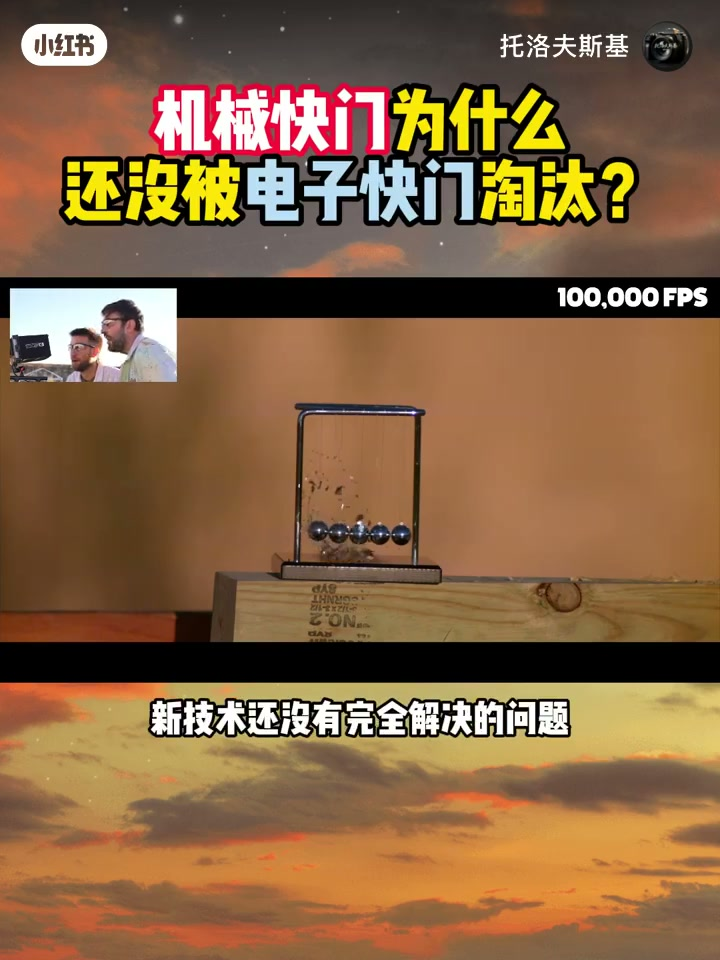

内容要点
「机械快门为什么还没被电子快门淘汰？」教程要点：现在的相机,电子快门已经这么快了 → 为什么机械快门到今天还没有被淘汰 → 先看机械快门 → 第一连打开,传感器开始曝光；详见正文。
知识结构
现在的相机,电子快门已经这么快了
最后一行记录的已经是更晚的瞬间
它可以让整个传感器同时开始曝光
- 现在的相机,电子快门已经这么快了
- 为什么机械快门到今天还没有被淘汰
- 先看机械快门
- 第一连打开,传感器开始曝光
- 第二连关闭,曝光结束
现在的相机,电子快门已经这么快了
00:00–00:52现在的相机,电子快门已经这么快了
现在的相机,电子快门已经这么快了；为什么机械快门到今天还没有被淘汰；先看机械快门；第一连打开,传感器开始曝光；第二连关闭,曝光结束；快门速度越高,两片联幕之间的缝隙越窄；这种基本的工作方式从胶片时代一直延续到今天；那无反相机的电子快门呢；没有机械联幕,更安静,更快,没有机械磨损；看起来应该早就把机械快门淘汰了；但电子快门真正的问题可能根本不是快不快；而是传感器究竟要多久才能把这张照片读完；电子快门可以实现非常短的曝光时间；但传感器读取数据仍然需要时间；很多CMOS传感器需要一行一行的读取画面；就像扫描一张纸,不是整张纸同时扫描；而是一行一行扫过去；第一行记录的是这个瞬间,中间记录的是稍后


00:53–01:39最后一行记录的已经是更晚的瞬间
最后一行记录的已经是更晚的瞬间；当你用电子快门拍一个快速移动的物体时；画面就会发生变形；这就是我们熟悉的果冻效应；你看到的不是一张照片里的时间；而是同一张照片里不同时间的时间；所以问题不只是电子快门有多快；而是传感器能不能足够快的读完整张照片；那机械快门为什么反而有优势；答案很简单；曝光完成之后,传感器被第二联遮住了；注意读取发生在黑暗里；所以读取需要多长时间也不会继续影响曝光；所以机械快门真正重要的地方；不只是控制曝光；而是把曝光和读取这两件事隔开了；这也是机械快门到今天还没有彻底消失的重要原因；还有一种方式,叶片快门


01:38–02:26它可以让整个传感器同时开始曝光
它可以让整个传感器同时开始曝光；所以高速闪光时非常有优势；那机械快门还能坚持多久；这取决于传感器读取速度；如果传感器读取已经足够快；那机械快门还有存在的必要吗；堆战时传感器让读取越来越快；再进一步,就是全局快门；让整个传感器记录同一个瞬间；当读取速度快到一定程度；主航读取带来的时间差就会小到可以忽略；那时候,机械快门的必要性才真正开始下降；所以我们今天看一台相机的时候；很多看起来老的东西并不一定是落后；它可能只是在解决一个新技术还没有完全解决的问题；那你觉得机械快门还会存在多久；你觉得它最终会被彻底淘汰；还是会一直保留下来




口述/画面要点（40段）
结合 Whisper medium 与画面大字整理；专有名词已校对。
现在的相机,电子快门已经这么快了
为什么机械快门到今天还没有被淘汰
先看机械快门
第一连打开,传感器开始曝光
第二连关闭,曝光结束
快门速度越高,两片联幕之间的缝隙越窄
这种基本的工作方式从胶片时代一直延续到今天
那无反相机的电子快门呢
没有机械联幕,更安静,更快,没有机械磨损
看起来应该早就把机械快门淘汰了
但电子快门真正的问题可能根本不是快不快
而是传感器究竟要多久才能把这张照片读完
电子快门可以实现非常短的曝光时间
但传感器读取数据仍然需要时间
很多CMOS传感器需要一行一行的读取画面
就像扫描一张纸,不是整张纸同时扫描
而是一行一行扫过去
第一行记录的是这个瞬间,中间记录的是稍后
最后一行记录的已经是更晚的瞬间
当你用电子快门拍一个快速移动的物体时
画面就会发生变形
这就是我们熟悉的果冻效应
你看到的不是一张照片里的时间
而是同一张照片里不同时间的时间
所以问题不只是电子快门有多快
而是传感器能不能足够快的读完整张照片
那机械快门为什么反而有优势
答案很简单
曝光完成之后,传感器被第二联遮住了
注意读取发生在黑暗里
所以读取需要多长时间也不会继续影响曝光
所以机械快门真正重要的地方
不只是控制曝光
而是把曝光和读取这两件事隔开了
这也是机械快门到今天还没有彻底消失的重要原因
还有一种方式,叶片快门
它可以让整个传感器同时开始曝光
所以高速闪光时非常有优势
那机械快门还能坚持多久
这取决于传感器读取速度